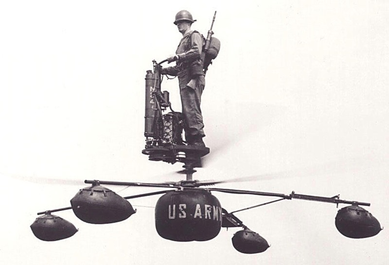

Ever since the dawn of heavier-than-air flight, inventors have tried to design new kinds of aircraft in order to achieve improved performance, introduce new capabilities, or just do something different. In this series we describe some of the stranger aircraft that have actually flown.
This month we celebrate the US Army's Aerocycle one-man helicopter. The basic design of a helicopter with the blades below the pilot has been attempted several times. Such aircraft are economical, stable and very easy to fly. To turn the pilot merely needs to shift his weight in the direction he wants to go. There's only one disadvantage. Can you guess what it is?

Answer: If you fall off you get turned into hamburger meat!